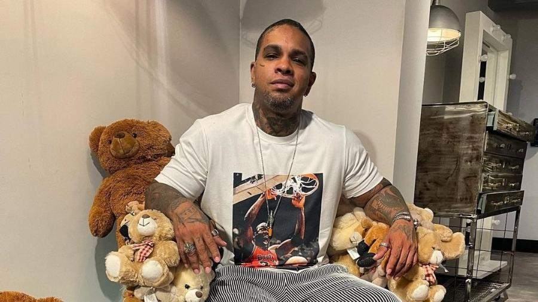

Anderson Leonardo
Anderson Leonardo integrante do grupo Molejo, é curado do câncer. Anderson, esteve no Encontro com Fátima Bernardes, sexta-feira, 19 de janeiro de 2023, afirmou ter se curado do câncer, o qual foi diagnosticado em outubro de 2022.
Renatinho Bokaloka
Renatinho Bokaloka morre de infarto fuminante aos 48 anos. Bokaloka passou mal em casa com dores nos braços, peito e falta de ar, foi levado para o hospital, mas infelizmente não resistiu, Renainho faleceu dia 07 de janeiro de 2023
Léo Santana
O cantor e compositor Léo Santana, compôs o novo hit do Carnaval "Zona de Perigo" compôs sua música em menos de uma hora. Em entrevista o cantor afirmou que no momento estava muito inspirado para compor. "Eu diria que essa música foi surgindo naturalmente da minha cabeça".
Ludmilla

Fãs reclamam dos preços de ingresso para o show de Ludimilla. Já estão abertas as vendas do "Numanice", show de pagode de Ludmilla, no Rio. O 1º lote de open bar custa R$ 520. A entrada comum é de R$ 300 ou R$ 150 para quem doar 1kg de alimento. O público se dividiu: enquanto a plataforma de vendas caía com o volume de pessoas, o preço revoltava parte dos fãs da cantora.
Karinah
Karinah não quer mais ser conhecida como a bilionária, agora ela quer falar de música! Desde que a compra da mansão de Xuxa no Rio de Janeiro virou notícia, Karinah desistiu de tentar esconder o casamento ou a vida confortável que leva com os filhos gêmeos e o marido, o empresário catarinense Diether Werninghaus. O medo de ser vista apenas como uma mulher rica e vaidosa fez com que a cantora falasse cada vez mais sobre sua música e, ao mesmo tempo, decifrasse o título de Rainha do Pagode.Em entrevista ao Splash, Karinah relembrou o início da carreira como revelação no programa "Ídolos" — quando ainda era conhecida como Karina Silva —. o fôlego que ganhou ao conhecer Ivete Sangalo, o ritmo intenso de trabalho mesmo na pandemia e o apoio que busca dar hoje a outras cantoras que, como ela, encontraram no pagode uma barreira machista.
Rodriguinho

Ex-Travessos em entrevista, Rodriguinho diz que odiava ser comparado ao Backstreet Boys.O músico Rodriguinho, ex-vocalista da banda "Os Travessos", relembra a fama do grupo em entrevista a Daniela Albuquerque que vai ao ar hoje na RedeTV. Ele confessa que não gostou da forma como a banda era vista: “Viramos tipo uma boy band, chegamos e nos chamavam de 'Backstreet Boys do pagode'. Eu odiava”, diz ele.